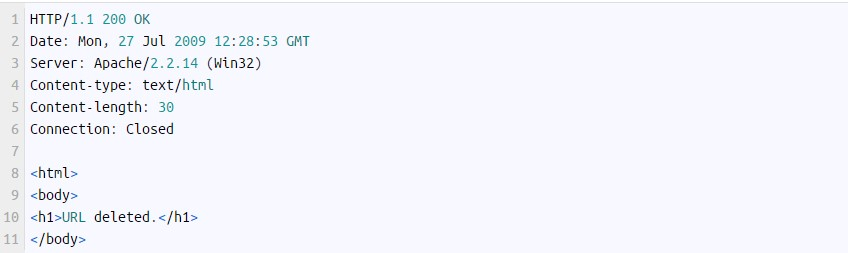

Este método le solicita al servidor web que se borre un recurso en específico.
Ejemplo: Se le solicitará al servidor eliminar el archivo hello.htm en la ruta raíz del servidor:
El servidor por su parte responderá eliminando dicho archivo y respondiendo al cliente lo siguiente:
